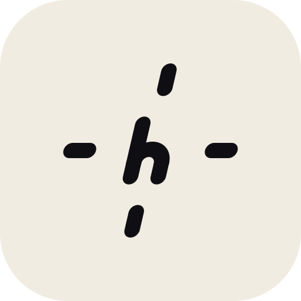
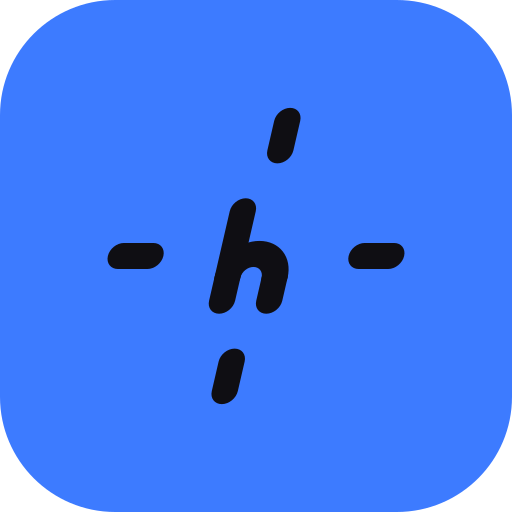

halmic h marks: five readings of "the crosshair"
All built from the mark's geometry (bar 53, round caps, 13 degree lean, dot 53). For comparison, the existing mark on the same tiles at the same sizes.


The existing mark. Which feature did you mean by the crosshair: the joints where bars overlap, the dot and bar of the "!", or something else?
1. Diagonal cross
Where the mark's bars overlap: the arch is its own bar and starts to the left of the stem, so it crosses the ascender and its tip pokes out the other side, an X-shaped joint at the shoulder.
2. h!
The mark's "!": a bar with a dot below it, same bar height (140.54), same gap (41.5), set after the h so the pair reads like the "M!" lockup.


3. Plus joint
The mark's bottom bar meeting the long stem: here the shoulder is a horizontal bar that crosses the ascender and sticks out the other side, making a plus where the two bars overlap.
4. Reticle
A sight: four bar-tips (the mark's bars, shortened) at north, east, south and west with the h held in the middle, like a reticle around the dot.


5. Sight dot
The mark's dot, placed as a sight inside the h's counter, the arch widened so the dot (53) floats with equal air on both sides.